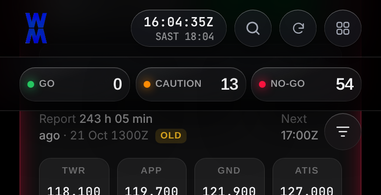
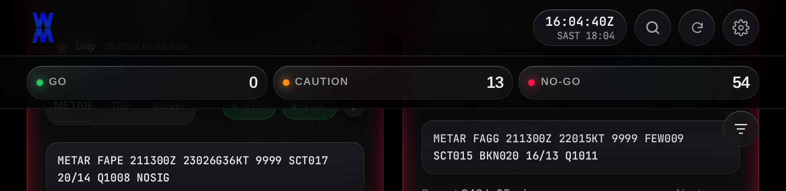
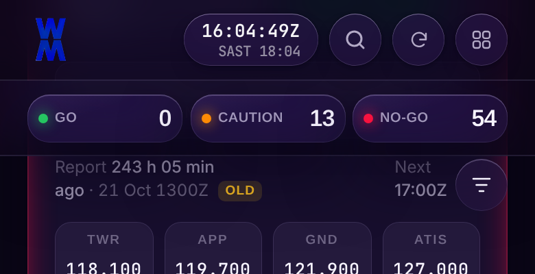
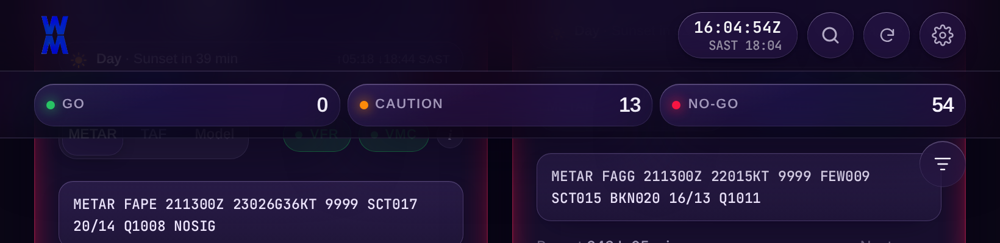
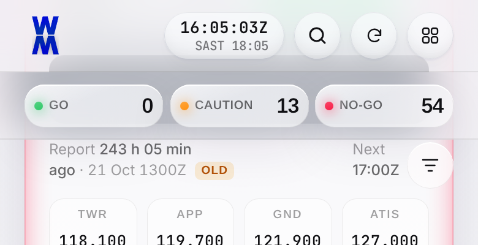
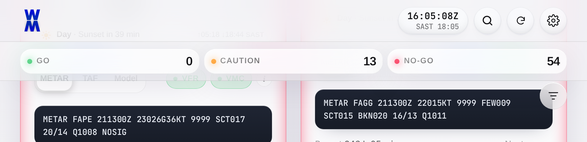
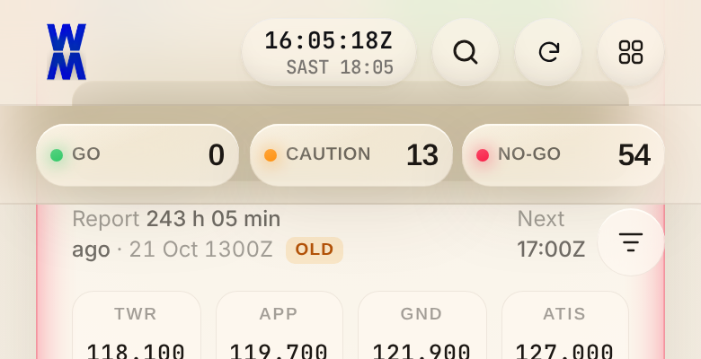
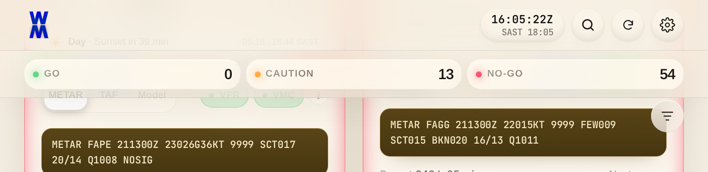

Band tint, blur(20px) saturate(1.8), and bottom border are read from the top bar's computed style per theme (verified equal in all 4 themes). Alignment A kept: 0px gap at 390/820/1440. Animation unchanged; blur not animated.







